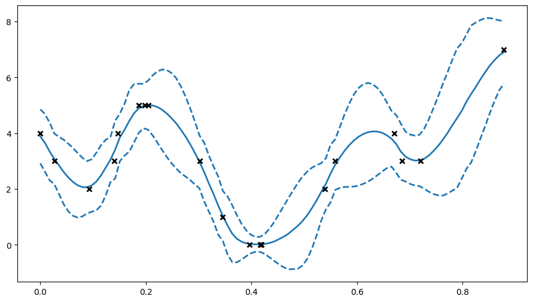

Ordinal regression#
Ordinal regression aims to fit a model to some data \((X, Y)\), where \(Y\) is an ordinal variable. To do so, we use a VPG model with a specific likelihood (gpflow.likelihoods.Ordinal).
[1]:
import gpflow
import tensorflow as tf
import numpy as np
import matplotlib.pyplot as plt
%matplotlib inline
plt.rcParams["figure.figsize"] = (12, 6)
np.random.seed(123) # for reproducibility
2022-06-28 14:57:25.019579: W tensorflow/stream_executor/platform/default/dso_loader.cc:64] Could not load dynamic library 'libcudart.so.11.0'; dlerror: libcudart.so.11.0: cannot open shared object file: No such file or directory
2022-06-28 14:57:25.019609: I tensorflow/stream_executor/cuda/cudart_stub.cc:29] Ignore above cudart dlerror if you do not have a GPU set up on your machine.
/home/circleci/project/gpflow/experimental/utils.py:42: UserWarning: You're calling gpflow.experimental.check_shapes.decorator.check_shapes which is considered *experimental*. Expect: breaking changes, poor documentation, and bugs.
warn(
[2]:
# make a one-dimensional ordinal regression problem
# This function generates a set of inputs X,
# quantitative output f (latent) and ordinal values Y
def generate_data(num_data):
# First generate random inputs
X = np.random.rand(num_data, 1)
# Now generate values of a latent GP
kern = gpflow.kernels.SquaredExponential(lengthscales=0.1)
K = kern(X)
f = np.random.multivariate_normal(mean=np.zeros(num_data), cov=K).reshape(-1, 1)
# Finally convert f values into ordinal values Y
Y = np.round((f + f.min()) * 3)
Y = Y - Y.min()
Y = np.asarray(Y, np.float64)
return X, f, Y
np.random.seed(1)
num_data = 20
X, f, Y = generate_data(num_data)
plt.figure(figsize=(11, 6))
plt.plot(X, f, ".")
plt.ylabel("latent function value")
plt.twinx()
plt.plot(X, Y, "kx", mew=1.5)
plt.ylabel("observed data value")
2022-06-28 14:57:28.194711: W tensorflow/stream_executor/platform/default/dso_loader.cc:64] Could not load dynamic library 'libcuda.so.1'; dlerror: libcuda.so.1: cannot open shared object file: No such file or directory
2022-06-28 14:57:28.194739: W tensorflow/stream_executor/cuda/cuda_driver.cc:269] failed call to cuInit: UNKNOWN ERROR (303)
2022-06-28 14:57:28.194759: I tensorflow/stream_executor/cuda/cuda_diagnostics.cc:156] kernel driver does not appear to be running on this host (9ab0ee389f83): /proc/driver/nvidia/version does not exist
2022-06-28 14:57:28.194998: I tensorflow/core/platform/cpu_feature_guard.cc:193] This TensorFlow binary is optimized with oneAPI Deep Neural Network Library (oneDNN) to use the following CPU instructions in performance-critical operations: AVX2 AVX512F FMA
To enable them in other operations, rebuild TensorFlow with the appropriate compiler flags.
/home/circleci/project/gpflow/experimental/utils.py:42: UserWarning: You're calling gpflow.experimental.check_shapes.checker.ShapeChecker.__init__ which is considered *experimental*. Expect: breaking changes, poor documentation, and bugs.
warn(
[2]:
Text(0, 0.5, 'observed data value')

[3]:
# construct ordinal likelihood - bin_edges is the same as unique(Y) but centered
bin_edges = np.array(np.arange(np.unique(Y).size + 1), dtype=float)
bin_edges = bin_edges - bin_edges.mean()
likelihood = gpflow.likelihoods.Ordinal(bin_edges)
# build a model with this likelihood
m = gpflow.models.VGP(data=(X, Y), kernel=gpflow.kernels.Matern32(), likelihood=likelihood)
# fit the model
opt = gpflow.optimizers.Scipy()
opt.minimize(m.training_loss, m.trainable_variables, options=dict(maxiter=100))
[3]:
fun: 25.487473214735196
hess_inv: <233x233 LbfgsInvHessProduct with dtype=float64>
jac: array([-6.70124351e-02, -2.63691349e-02, -3.73563106e-02, -4.29590872e-02,
-6.39766217e-02, -2.91486121e-02, -6.93245380e-02, -5.52078984e-04,
-1.26962174e-02, 2.08385661e-02, 5.12509242e-03, 1.45752969e-02,
6.97338950e-03, -2.55116513e-02, -9.26308550e-03, -2.19025513e-02,
-2.09497130e-04, -1.24548208e-02, -2.20909304e-02, -1.66475561e-03,
2.76473924e-04, -4.08297751e-04, -5.73756643e-09, 2.48882923e-06,
-1.86625050e-09, -7.61005292e-06, 1.96396792e-11, -6.41245316e-03,
1.95481633e-08, 2.47775929e-06, -2.29078094e-07, -2.02713834e-05,
1.53677782e-04, -3.33834269e-03, 2.67857178e-04, 5.83327549e-05,
1.58529878e-04, -2.02267123e-04, -1.49948001e-04, 3.24763505e-04,
-2.62488618e-02, 7.40309851e-03, -3.48463595e-09, 1.01856764e-06,
-2.07230932e-10, 4.50575222e-04, 1.28378255e-11, -1.32159952e-03,
1.41372663e-08, 1.93336797e-07, -4.62651383e-07, -1.68850264e-05,
9.67219574e-05, 2.69676640e-03, -1.22222090e-03, -1.31833240e-02,
1.59453408e-03, -1.43293921e-03, -3.83207974e-04, -8.27854815e-04,
1.35954423e-02, 2.94499652e-02, -1.36734526e-02, -5.81380469e-04,
-5.35594599e-03, -2.84990288e-09, -1.52951868e-04, -6.50219227e-07,
-8.77905137e-03, 4.66336192e-03, -2.30871904e-02, -9.38724271e-04,
-8.13133846e-04, -5.74685380e-05, -4.16503454e-04, 7.53787282e-05,
-7.76503032e-03, -3.10430400e-04, 2.44720019e-03, 3.14582778e-03,
-2.41285587e-02, -8.33796061e-03, -7.27852377e-02, -1.96038931e-05,
-8.30256084e-05, -2.66335852e-08, -2.22241972e-06, 3.83105845e-06,
-1.26789869e-04, 7.31994779e-05, -3.69278422e-04, -1.85407082e-05,
-1.46709642e-05, 1.74272473e-06, -6.48850410e-06, 1.81815843e-06,
-1.21009949e-04, -4.56146443e-06, 3.98649762e-05, -1.94408237e-05,
2.21521483e-03, -2.28707076e-02, -3.48783279e-02, 1.12675439e-02,
2.41177182e-02, -1.65974221e-09, 4.18062686e-05, -3.24209325e-07,
1.78828285e-02, 8.76598927e-04, -5.95379855e-03, -6.30077735e-04,
-4.24733764e-03, -2.63953571e-05, 6.09522798e-04, 3.61916198e-04,
-5.13049027e-03, 8.75313311e-04, -4.41738395e-03, -1.31205360e-05,
-2.80015227e-02, -2.94405120e-02, -6.43266353e-02, 4.69072432e-02,
-1.45445328e-02, -1.26609245e-03, 7.44339728e-11, 8.95734092e-05,
-2.88107665e-08, -2.56343376e-06, 1.28851694e-06, -3.06748180e-06,
2.11298225e-04, -1.20016022e-03, 2.59747179e-04, 7.47709631e-03,
-3.08552244e-03, -1.23310540e-02, 3.21123546e-04, -6.73079973e-04,
-2.20550983e-02, -7.20648827e-04, 5.22171370e-03, -7.70291015e-03,
1.54538701e-02, 1.23021638e-02, -4.67496884e-03, 8.00773914e-09,
1.52286302e-02, -8.29517700e-05, 3.74280686e-03, 9.20472245e-04,
-3.71074312e-03, 6.94568084e-04, 1.35230815e-03, 7.29887256e-05,
1.09516253e-02, -1.21227228e-03, 4.69140062e-03, 6.07348298e-03,
1.19631071e-02, -6.86909295e-03, -9.45640049e-03, 2.12042799e-03,
-1.27731626e-02, 7.19600291e-03, -2.44470916e-02, 1.15420201e-02,
4.09053881e-07, -9.56732800e-05, -6.95424329e-06, -8.81106381e-04,
3.20412455e-03, -1.11788353e-02, 4.37886705e-03, 1.41330181e-03,
9.70802154e-04, -1.35660594e-03, -1.71117594e-03, 3.30067393e-03,
6.95755712e-03, 1.87399157e-05, 3.12411778e-04, -1.47154535e-02,
-5.04958798e-03, 8.32876981e-05, 5.92548372e-03, 7.36269207e-03,
-9.16304068e-03, -5.99488254e-04, 4.93001899e-03, -2.81834245e-03,
-2.14757160e-02, 8.64973135e-06, 3.70054394e-03, 1.90431861e-03,
-2.12250624e-02, 5.60009963e-03, 1.15948067e-02, -3.76088639e-03,
1.04430789e-03, 6.61823626e-04, 3.61114816e-04, 1.32088278e-02,
-3.77232526e-04, 7.38219185e-04, -3.34866468e-04, 2.98547059e-03,
1.19244035e-02, -8.37113678e-04, 8.27565884e-04, 1.71330689e-04,
8.15047117e-04, 4.28891756e-05, -7.66861467e-05, -6.82120581e-05,
1.67944054e-03, -1.66496931e-04, -7.36647260e-04, -2.64908726e-03,
6.48550003e-03, 2.46840902e-03, -2.87618319e-04, -7.17071545e-02,
1.57589240e-03, -2.06510739e-03, 3.71673374e-03, -7.41398580e-03,
-7.55238647e-03, -3.83863224e-04, 1.26794550e-01, -8.49871916e-03,
-9.85295734e-03])
message: 'STOP: TOTAL NO. of ITERATIONS REACHED LIMIT'
nfev: 116
nit: 100
njev: 116
status: 1
success: False
x: array([-1.99983637e+00, -2.36202883e-01, -8.93858856e-04, 7.61971867e-01,
-1.98071642e-01, -1.59225012e+00, 7.93691109e-01, -3.86906759e-01,
-1.13968916e-01, 3.78617196e-01, -8.97843940e-02, 3.46440726e-01,
-7.61959550e-02, 1.59572314e+00, -2.61493022e-01, 8.54425415e-01,
6.56714367e-03, 4.45914325e-01, -3.20475319e-01, 6.86852379e-04,
9.88815269e-01, -2.80927469e-03, 6.18699508e-08, 1.28588672e-05,
1.00539776e-08, 1.33417916e-04, 5.90266399e-11, -6.29062621e-02,
7.56627453e-09, -1.38935817e-04, -1.17758112e-05, -7.71280928e-04,
2.21518355e-03, -6.31981999e-02, 1.79689763e-03, -3.69459796e-03,
-2.79554054e-03, 1.03717040e-05, 4.43013342e-06, 3.12408650e-05,
2.24987956e-01, 9.45886961e-01, 3.60341832e-08, 6.94536753e-06,
6.70644542e-09, 8.43430996e-03, 3.49655726e-11, -2.24926103e-02,
7.53663729e-09, -4.44085759e-05, -4.05064555e-06, -2.51036670e-04,
7.33499233e-04, 2.99478174e-02, -3.30798684e-02, -2.28202478e-01,
1.38901963e-03, -7.88931505e-04, 1.12853681e-05, -6.04747585e-06,
-1.92134028e-02, 1.42010343e-01, 6.14726330e-01, -9.80908972e-03,
-1.31935293e-01, -4.48067028e-08, -6.30153181e-04, -1.33371623e-05,
1.21155829e-02, 7.00043005e-02, -3.90308286e-01, -3.17400091e-02,
-8.18775183e-03, -2.86545033e-04, -3.00195415e-05, -5.03533204e-07,
1.74389595e-03, -5.28885375e-05, 2.23614601e-02, 4.28595705e-02,
-5.45660922e-03, 3.64348448e-04, 1.37469003e-01, 9.99917283e-01,
-2.04403493e-03, -4.50479020e-07, -9.61538044e-06, 3.05052913e-05,
1.96916836e-04, 1.07911909e-03, -6.05889848e-03, -4.88514727e-04,
-1.28192297e-04, 2.44421136e-05, 2.29046877e-07, 1.20132468e-05,
2.73153871e-05, -6.96873560e-07, 3.48283781e-04, -1.75739180e-04,
-1.52917288e-01, 3.76518980e-03, -1.23768016e-02, 1.69779850e-01,
7.18710829e-01, -1.66899046e-08, -4.40691628e-03, -4.47488054e-06,
-4.24392849e-01, 2.30594906e-02, -8.93959705e-02, -1.37471950e-02,
-3.75194091e-03, -9.54889373e-05, 3.74210629e-05, 2.32721137e-05,
7.89815618e-04, 3.76847351e-05, 4.30297917e-02, 1.76146469e-02,
3.15407086e-02, -7.25879183e-04, -6.34108594e-02, -7.06807141e-02,
1.09875612e-01, 5.73031462e-01, -2.04449084e-10, 1.13190671e-02,
-1.84245591e-08, 2.12054115e-05, 2.17258674e-06, 1.15464294e-04,
-2.49144671e-04, -2.39781171e-02, -1.74630631e-01, 4.91010081e-02,
-4.29767745e-04, -3.00800041e-01, -9.02460637e-05, 2.22170058e-04,
-1.28595012e-02, -1.11762926e-04, -1.25990161e-01, 3.07061517e-02,
-1.41186431e-01, 3.20194087e-01, 1.62205773e-01, -2.34512923e-07,
5.21937654e-02, 1.25325337e-03, -2.19871353e-03, -9.53647062e-04,
-5.51205645e-04, 1.85736727e-05, 7.78605595e-05, 2.11580538e-05,
2.00985146e-04, 2.37110486e-05, -1.13174466e-01, 8.95454307e-04,
3.52915249e-02, -7.37290505e-04, -2.02141925e-02, -9.81404441e-02,
-2.11285548e-01, 1.18272038e-01, 3.07518578e-01, 6.84403468e-01,
-2.35123718e-06, -2.49187228e-03, -2.14413509e-04, -1.36708818e-02,
3.84300507e-02, -4.85617317e-01, 6.70812121e-03, -3.72223238e-02,
-6.34298505e-02, 7.17535875e-03, -3.53163033e-05, 3.22232154e-04,
-2.12531863e-01, 4.21360672e-03, -9.00130480e-04, -2.67039704e-01,
-9.13288433e-03, 1.82252820e-03, 5.99677085e-02, 4.20801449e-01,
2.69419180e-01, 3.30819362e-02, -6.13350076e-02, -2.50635967e-02,
-7.38653791e-03, -4.91786063e-05, 2.42729131e-04, 1.14360104e-04,
9.26170505e-04, 3.07419842e-04, -2.73149123e-01, 2.97718200e-02,
-8.59439554e-02, 5.73017879e-03, 3.07121948e-04, 8.22051473e-03,
-6.95078896e-04, 2.04833534e-04, -1.22856115e-02, -5.97412001e-02,
9.07757991e-01, 9.94611765e-01, 4.55057921e-02, 5.61411446e-03,
1.55807981e-03, -2.06739891e-03, 2.31937400e-05, -1.27963224e-04,
-5.97778398e-04, 3.59842077e-05, 5.40438316e-03, -2.59330630e-02,
-2.08576609e-01, -4.35763563e-02, -1.99937056e-05, -1.19084412e-02,
-1.90789943e-04, -4.23138481e-05, -2.17757226e-04, 5.09683642e-02,
2.04346489e-01, 1.67917358e-01, -1.97914471e+00, 5.46650401e+00,
-1.44968145e+00])
[4]:
# here we'll plot the expected value of Y +- 2 std deviations, as if the distribution were Gaussian
plt.figure(figsize=(11, 6))
X_data, Y_data = (m.data[0].numpy(), m.data[1].numpy())
Xtest = np.linspace(X_data.min(), X_data.max(), 100).reshape(-1, 1)
mu, var = m.predict_y(Xtest)
(line,) = plt.plot(Xtest, mu, lw=2)
col = line.get_color()
plt.plot(Xtest, mu + 2 * np.sqrt(var), "--", lw=2, color=col)
plt.plot(Xtest, mu - 2 * np.sqrt(var), "--", lw=2, color=col)
plt.plot(X_data, Y_data, "kx", mew=2)
[4]:
[<matplotlib.lines.Line2D at 0x7f0565efbdf0>]

[5]:
## to see the predictive density, try predicting every possible discrete value for Y.
def pred_log_density(m):
Xtest = np.linspace(X_data.min(), X_data.max(), 100).reshape(-1, 1)
ys = np.arange(Y_data.max() + 1)
densities = []
for y in ys:
Ytest = np.full_like(Xtest, y)
# Predict the log density
densities.append(m.predict_log_density((Xtest, Ytest)))
return np.vstack(densities)
[6]:
fig = plt.figure(figsize=(14, 6))
plt.imshow(
np.exp(pred_log_density(m)),
interpolation="nearest",
extent=[X_data.min(), X_data.max(), -0.5, Y_data.max() + 0.5],
origin="lower",
aspect="auto",
cmap=plt.cm.viridis,
)
plt.colorbar()
plt.plot(X, Y, "kx", mew=2, scalex=False, scaley=False)
[6]:
[<matplotlib.lines.Line2D at 0x7f0565df8940>]

[7]:
# Predictive density for a single input x=0.5
x_new = 0.5
Y_new = np.arange(np.max(Y_data + 1)).reshape([-1, 1])
X_new = np.full_like(Y_new, x_new)
# for predict_log_density x and y need to have the same number of rows
dens_new = np.exp(m.predict_log_density((X_new, Y_new)))
fig = plt.figure(figsize=(8, 4))
plt.bar(x=Y_new.flatten(), height=dens_new.flatten())
[7]:
<BarContainer object of 8 artists>